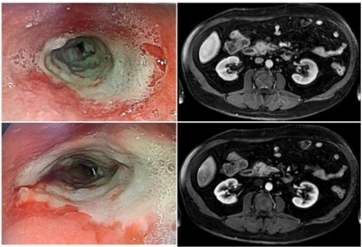

Questão 1 · Gastrinoma · Gastrinoma · 4000182361Mulher de 58 anos de idade procura atendimento ambulatorial com queixa de dor epigástrica, náuseas e vômitos há cinco meses. Evoluiu com disfagia no último mês, principalmente para alimentos sólidos, com perda de 5kg (100kg para 95kg) nesse período. Sem outros sintomas ou antecedentes. Ao exame físico, está descorada (+/4+), com frequência cardíaca de 85bpm e pressão arterial de 130x80mmHg. Seu abdome é globoso, flácido e doloroso à palpação profunda em epigástrio, sem sinais de irritação peritoneal. Realizou exame de endoscopia digestiva alta, cujas alterações em esôfago distal podem ser vistas nas imagens a seguir. Adicionalmente, uma ressonância nuclear magnética evidenciou lesão hipervascularizada em topogra a de cabeça de pâncreas, que pode ser vista nas imagens a seguir: Qual é o diagnóstico da paciente?

A Neoplasia mucinosa papilar intraductal com degeneração maligna.
B Síndrome carcinoide por tumor secretor de serotonina.
C Pancreatite focal recidivante.
D Adenocarcinoma de pâncreas indiferenciado.
E Tumor neuroendócrino secretor de gastrina.
Questão 2 · Tumores Neuroendócrinos · 4000171000Paciente operou tumor de cauda pancreática. O laudo histopatológico evidenciou tumor neuroendócrino de bom prognóstico, que deve, portanto, possuir como características:
A células pleomórficas com irregularidades nucleares
B 30 mitoses/campo de aumento
C Ki 67 = 77% e alto grau
D Ki 67 = 2% e baixo grau
Questão 3 · Manif estações Clínicas · 4000167097Um paciente com sintomas de sudorese, agitação, confusão mental, com níveis baixos de glicose e alívio após administração de glicose foi diagnosticado com um tumor gastrointestinal e tem indicação de tratamento cirúrgico. Quais são, respectivamente, o nome desse conjunto de sinais de sintomas e o do provável tumor desse paciente?
A Tríade de Charcot / Gastrinoma.
B Síndrome de Verner-Morrison / VIPoma.
C Síndrome de Verner-Morrison / Glucagonoma.
D Tríade de Virchow / GIST.
E Tríade de Whipple / Insulinoma.
Questão 4 · Insulinoma · Insulinoma · 4000164097Menino de 8 anos é levado para consulta apresentando história de convulsões tônico-clônicas generalizadas desde os 5 anos de vida. A família refere que ele é acompanhado por neurologista de forma irregular e faz uso de fenobarbital há dois anos. Contam, ainda, que, antes dos episódios convulsivos, a criança ca “fora do ar” e que, por diversas vezes, foi testada a glicose periférica nas idas à emergência, sendo evidenciada hipoglicemia. Ao exame físico, o menino interage com o examinador, porém, é perceptível o atraso cognitivo. O restante do exame físico é normal. Após jejum, é realizada glicemia capilar com resultado de 46mg/dL, confirmado pela glicemia central. Hemograma e bioquímica sem demais alterações. O EAS mostra ausência de corpos cetônicos. A dosagem de insulina no sangue é de 10 hipoglicemia nesse paciente tem como provável causa:
A cetose diabética.
B infecção pancreática
C tumor secretor de insulina
D defeito do metabolismo do glicogênio
Revisar: possível letra faltando em enunciado
Questão 5 · Epidemiologia · 4000146095Em geral, os tumores carcinoides raramente são malignos e se originam das células precursoras neuroendócrinas e podem se apresentar em qualquer lugar do corpo humano. A localização mais comum é o trato gastrointestinal, abrangendo mais da metade de todos os carcinoides. Assinale a alternativa com os locais mais comuns do trato gastrointestinal:
A Intestino delgado, reto e o apêndice cecal.
B Intestino grosso, reto, estômago.
C Esôfago, intestino delgado e reto.
D Reto, pâncreas e mesentério.
Questão 6 · Gastrinoma · Gastroenterologia · 4000143216Homem de 45 anos com doença ulcerosa refratária, em tratamento há oito semanas, com inibidor da bomba de próton, evoluiu com diarreia de cinco evacuações/dia. Realizou EDA que revelou úlceras múltiplas em duodeno distal e hipertro a das pregas gástricas. Nesse caso, a dosagem sérica que pode ajudar no diagnóstico consiste em:
A gastrina
B glucagon
C peptídeo YY
D somatostatina
Questão 7 · Diagnóstico da Síndrome Carcinoide · Síndrome Carcinoide · Síndrome Carcinoide · 4000142772Paciente do sexo masculino, 45 anos de idade, há cerca de seis meses apresenta quadro de cólicas abdominais difusas esporádicas, diarreia e crises de broncoespasmo associadas a rubor facial. O diagnóstico mais provável é:
A Síndrome carcinóide de íleo.
B Cisto de pâncreas.
C Adenoma viloso de cólon.
D Adenocarcinoma gástrico com metástases.
E Diverticulite aguda.
Questão 8 · VIPoma · 4000142770A Síndrome de Verner-Morrison (WDHA) está associada a tumor de:
A Cólon.
B Pâncreas.
C Adrenal.
D Jejuno-íleo.
E Fígado.
Questão 9 · Gastroenterologia · Tumores Funcionantes Localizados · 4000131008Na presença de insulinoma de mais ou menos 2,0 cm no corpo do pâncreas a conduta correta é:
A Realização de quimioterapia neoadjuvante seguido por ressecção tumoral e radioterapia pós operatória.
B Efetuar, de preferência, enucleação guiada pela ultra-sonografia intra-operatória.
C Efetuar pancreatectomia corpo-caudal.
D Realização de radioterapia neoadjuvante por 3 meses e posterior ressecção local do tumor.
Questão 10 · Tratamento · 4000130971Paciente de 40 anos foi submetido a apendicectomia laparoscópica por apendicite aguda. A análise histopatológica da peça evidenciou tumor carcinoide do apêndice medindo 1,5 cm com comprometimento do mesoapêndice. A conduta subsequente deverá ser:
A Colectomia total
B Hemicolectomia direita
C A apendicectomia foi curativa
D Realizar colonoscopia oito semanas pós-cirugia
Questão 11 · Hipoglicemia em indivíduos não diabéticos · Insulinoma · 4000118223Você recebe um paciente com suspeita de crises de hipoglicemia. Qual a rmação NÃO está correta com relação ao diagnóstico diferencial destes casos?
A Os insulinomas são tumores neuroendócrinos pequenos, que tem origem nas células beta pancreáticas.
B A tríade de Whipple é crítica para confirmar hipoglicemia de jejum e pós-prandial, idealmente com os sintomas observados pelo médico e a glicemia medida em laboratório.
C Hiperinsulinemia com níveis altos de peptídeo C e pró-insulina ocorre nos casos de insulinoma.
D A tríade de Whipple consiste em taquicardia, baixa glicemia plasmática e hipotensão arterial.
E Ausência de hipoglicemia após 48 horas de jejum é suficiente para excluir o diagnóstico de insulinoma.
Questão 12 · Apendicite Aguda · Cirurgia · Tumores Neuroendócrinos do Pâncreas · 4000103628Mulher de 17 anos, com história de dor abdominal há 4 dias, de início periumbilical, posteriormente irradiando-se para fossa ilíaca direita. Após exame físico, foi indicada apendicectomia, realizada sem intercorrências. O resultado do exame anatomopatológico do apêndice detectou tumor neuroendócrino NET II de 0,9 cm na base do apêndice, sem comprometimento linfático. A conduta mais adequada a ser tomada para a paciente é;
A indicar colectomia direita ampliada e radioterapia.
B indicar colonoscopia e ressonância abdominal.
C indicar colectomia total e quimioterapia.
D dar alta ambulatorial, pois a paciente está devidamente tratada.
Questão 13 · Glucagonoma · 4000103344Uma mulher de 38 anos procura o médico por causa de sede e micção excessivas nas últimas 4 semanas. Seu apetite está normal, mas ela perdeu 6,8kg em 1 mês. O exame físico mostra erupções cutâneas necrosantes e eritematosas nas pernas. A glicemia de jejum é de 170 mg/dL. Uma tomogra a computadorizada mostra um tumor na cauda do pâncreas. Qual das alternativas a seguir é a célula mais provável da qual o tumor pancreático é derivado?
A Beta
B Alfa
C Acinares
D Delta
Questão 14 · Intestino Posterior · Manif estações Clínicas · Intestino Médio · 4000093138Assinale, entre as alternativas, qual corresponde à localização de tumor carcinoide mais propensa ao desenvolvimento de metástases.
A Ileo
B Jejuno
C Duodeno
D Estômago
E Apêndice cecal
Questão 15 · Diagnóstico da Síndrome Carcinoide · 4000031836Mulher, 57 anos vai a consulta medica com queixa de fatiga, emagrecimento, períodos de taquicardia, ushing e diarreia. Ao exame físico pulmões sem alterações, pulso irregular, veias jugulares ingurgitadas com onda v proeminente, sopro holossistólico na borda esternal esquerda inferior com intensifica com a inspiração e edema periférico. Durante toda a doença permaneceu afebril. Qual o diagnóstico da paciente?
A Endocardite bacteriana.
B Síndrome carcinoide.
C Anomalia de Ebstein.
D Embolia pulmonar crônica.
Questão 16 · Diagnóstico da Síndrome Carcinoide · Síndrome Carcinoide · Síndrome Carcinoide · 4000102572Sobre os tumores carcinoides do trato digestório, é INCORRETO:
A É a neoplasia neuroendócrina mais comum, acometendo pacientes entre 50 e 70 anos.
B A síndrome carcinoide é uma manifestação muito comum.
C Tem como origem células enterocromafins, isto é, que coram pelo cromato de potássio, devido ao seu conteúdo rico em serotonina.
D Tem baixo poder de provocar metástases.
Questão 17 · Diagnóstico da Síndrome Carcinoide · Síndrome Carcinoide · Síndrome Carcinoide · 4000100472Em relação ao tumor carcinoide, podemos afirmar que:
A Quando originados no cólon sigmoide normalmente causam Síndrome Carcinoide;
B A dosagem do ácido vanilmandélico (VMA) deve ser realizada na dúvida diagnóstica;
C Se originados no intestino delgado podem manifestar-se com obstrução intestinal;
D Tem como principal local de origem o estômago.
Questão 18 · Tumores Neuroendócrinos do Trato Gastrointestinal · Cirurgia · 4000039160Sobre os tumores carcinoides, é INCORRETO afirmar que:
A A maioria dos tumores carcinoides tem origem no trato gastrointestinal, sendo o apêndice cecal o sítio mais comum.
B Os tumores carcinoides do trato respiratório caracteristicamente produzem altos níveis de serotonina e adenocorticotrópicos.
C Cerca de 70 a 80% dos tumores carcinoides são assintomáticos e encontrados acidentalmente durante um procedimento cirúrgico.
D O tamanho do tumor carcinoide está diretamente relacionado com a presença de metástases que são encontradas em aproximadamente 2% dos tumores menores que 1cm.
Questão 19 · VIPoma · Insulinoma · Glucagonoma · 4000038053Qual é a neoplasia endócrina pancreática associada à tríade de Whipple?
A Gastrinoma
B Glucagonoma
C Insulinoma
D Vipoma
Questão 20 · Tumores Neuroendócrinos do Pâncreas · 4000020156Paciente sexo masculino, 50 anos, há 2 meses com crises de confusão mental, sudorese fria e hipotensão, que melhoram com a ingestão de alimentos. Numa das crises apresentava glicemia de 40 mg/dL. Ao exame físico não apresenta alterações. A ultrassonogra a de abdome foi normal e a ressonância nuclear magnética demonstrou uma lesão sólida de 2cm de cauda de pâncreas. Qual hipótese diagnóstica?
A Tumor neuroendócrino de pâncreas;
B Adenocarcinoma de pâncreas;
C Tumor de Frantz;
D Neoplasia papilar intra-ductal;
Questão 21 · Insulinoma · 4000103580Em relação aos insulinomas, pode-se afirmar que:
A São produzidos nas células alfa do pâncreas.
B São os tumores neuroendócrinos mais comuns do pâncreas.
C Raramente produzem hipoglicemia importante.
D Mais de 80% são malignos.
Questão 22 · Insulinoma · Glucagonoma · Gastrinoma · 4000098105Qual o tumor funcionante mais comum do pâncreas:
A Gastrinoma.
B Glucagonoma.
C Insulinoma.
D Somatostinoma.
Questão 23 · Epidemiologia · Manif estações Clínicas · 4000029389Em relação aos tumores neuroendócrinos pancreáticos, marque "V" para verdadeiro e "F" para falso. ( ) Os insulinomas são os tumores neuroendócrinos pancreáticos funcionais mais comuns e manifestam-se pela síndrome de Verner-Morrison (hipoglicemia em jejum, sintomas clínicos neuroglicopênicos e melhora dos sintomas com a administração de glicose). ( ) Os portadores da síndrome genética de neoplasia endócrina múltipla tipo 2 (NEM2) apresentam predisposição a desenvolverem tumores hipofisários, hiperplasia paratireoide e tumores neuroendócrinos pancreáticos. ( ) A maioria dos gastrinomas está localizada no chamado "triângulo dos gastrinomas", o qual é representado pela área delimitada pelo colo do pâncreas, ângulo entre a segunda e terceira porção do duodeno e con uência entre ducto cístico e hepático comum. ( ) A maioria dos tumores neuroendócrinos pancreáticos é funcionante e pode determinar sintomas por efeito de massa (dor abdominal, icterícia, obstrução intestinal e perda de peso). Assinale a alternativa CORRETA.
A V,F,V,F
B V,F,V,V
C F,F,V,F
D F,V,F,V
E F,V,V,V
Questão 24 · Tumores Neuroendócrinos · Tumores Neuroendócrinos do Pâncreas · Síndrome Carcinoide · 4000117340Tumores Neuroendócrinos (TNEs) são neoplasias com aumento do número de casos diagnosticados. Assinale a alternativa correta.
A TNEs são mais frequentemente encontrados na tireóide e na hipófise (neurohipófise).
B As localizações mais frequentes dos TNEs são: pulmões e hipófise (neurohipófise).
C TNEs exibem pior prognóstico e menor tempo de sobrevida quando de localização pancreática.
D Síndrome Carcinoide se refere à tríade: "flush" facial, diarreia e asma e é característica das neoplasias neuroendócrinas benignas.
Questão 25 · Hipoglicemia em indivíduos não diabéticos · Insulinoma · Insulinoma · 4000103388O insulinoma é o tumor funcionante mais comum do pâncreas endócrino. Sobre esse tumor, assinale a alternativa CORRETA.
A 97% dos insulinomas são localizados no duodeno, hilo esplênico ou ligamento gastrocólico, e os outros 3% no pâncreas.
B São hipoatenuantes quando comparados ao tecido pancreático circundante em tomografia computadorizada com contraste.
C Um nível inapropriadamente alto de insulina sérica (> 5µU/mL), na presença de hipoglicemia, é patognomônico de insulinoma.
D Após a localização, a ressecção cirúrgica do insulinoma é geralmente curativa porque a maior parte dos tumores tende a ser pequena, benigna e solitária.
Questão 26 · Tumores Neuroendócrinos do Trato Gastrointestinal · 4000065005Os tumores carcinoides são identificados mais comumente no:
A Estômago
B Apêndice
C Duodeno
D Jejuno
E Íleo
Questão 27 · Hipoglicemia em indivíduos não diabéticos · Insulinoma · 4000059309Insulinoma é um tumor neuroendócrino do pâncreas. As condições da tríade de Whipple que precisam ser encontradas para o diagnóstico de "hipoglicemia verdadeira" ser realizado são:
A Sinais e sintomas de hipoglicemia, glicemia < 50 mg/dl, alívio dos sintomas após administração de glucagon.
B Sinais e sintomas de hipoglicemia, glicemia < 50 mg/dl, alívio dos sintomas após administração de glicose.
C Sinais e sintomas de hiperglicemia, glicemia > 50 mg/dl, alívio dos sintomas após administração de insulina.
D Sinais e sintomas de hipoglicemia, glicemia < 50 mg/dl, alívio dos sintomas após administração de insulina.
Questão 28 · VIPoma · Insulinoma · Glucagonoma · 4000037679Marque a alternativa que apresenta o tumor neuroendócrino funcionante mais comum do pâncreas:
A Insulinoma.
B Gastrinoma.
C Glucagonoma.
D Vipoma.
Questão 29 · Tumores Neuroendócrinos do Trato Gastrointestinal · Cirurgia · 4000016246Paciente submetido a apendicectomia laparoscópica, retornou ao ambulatório com exame anatomopatológico evidenciando neoplasia. Pensando na maior incidência, qual o provável tipo histológico?
A Adenocarcinoma.
B Tumor carcinoide.
C Linfoma.
D Pseudomixoma.
E Hemangioma.
Questão 30 · Localização do Tumor · Gastrinoma · 4000106782O melhor exame para localizar o gastrinoma é:
A Ressonância nuclear magnética.
B Cintilografia.
C Ultrassom com Doppler colorido.
D Ultrassom endoscópico.
Questão 31 · Tumores Neuroendócrinos do Trato Gastrointestinal · Cirurgia · 4000102938Tumores Neuroendócrinos do Pâncreas Os achados clínicos do tumor neuroendócrino Gastrinoma são caracterizados como:
A Síndrome de Zollinger–Ellison.
B Síndrome de Turcot.
C Síndrome de Mallory–Weiss.
D Síndrome de Verner–Morrison.
Questão 32 · Intestino Posterior · Intestino Médio · Síndrome Carcinoide · 4000095055Assinale a alternativa que responde CORRETAMENTE à pergunta abaixo. Qual sítio de tumor carcinoide do sistema digestivo apresenta maior potencial de metastatização para o fígado?
A Apêndice cecal.
B Reto.
C Íleo.
D Estômago.
E Jejuno.
Questão 33 · Gastrinoma · Síndrome de ZollingerEllison · Teste da Secretina · 4000094524Uma mulher de 40 anos é encaminhada para seu ambulatório para tratamento de doença ulcerosa péptica. Tem história prévia de quatro hospitalizações devido a hemorragia digestiva alta por úlceras duodenais. Ela não está fazendo uso de qualquer medicamento, mas relata dispepsia, pirose e dejeções amolecidas três vezes ao dia. O melhor exame inicial para fazer o diagnóstico da paciente é:
A Dosagem de gastrina em jejum.
B Dosagem de paratormônio (PTH) em jejum.
C Cintilografia com octreotide.
D Dosagem de ácido 5-hidroxi indol acético na urina de 24 horas (5-HIAA).
E Pesquisa de giárdia por exames parasitológicos de fezes seriados.
Questão 34 · Hipoglicemia em indivíduos não diabéticos · Insulinoma · Hipoglicemia · 4000074173A glicose é um combustível metabólico obrigatório para o cérebro em condições siológicas. Entretanto o cérebro é incapaz de sintetizar glicose ou armazenar glicogênio por mais de alguns minutos. Por conseguinte, necessita de um suprimento contínuo de glicose a partir do sangue arterial. São sintomas neuroglicopênicos da hipoglicemia, EXCETO:
A Tremor.
B Fadiga.
C Crise convulsiva.
D Confusão mental.
E Alterações do comportamento.
Questão 35 · Gastrinoma · Síndrome de ZollingerEllison · 4000068866Das manifestações clínicas, alterações laboratoriais ou doenças listadas abaixo, qual a alternativa que indica a necessidade de se dosar o nível de gastrina sérica?
A Úlcera péptica.
B Diarréia ou esteatorreia inexplicáveis.
C Gastrite enantematosa moderada associada ao H. pylori.
D Hipocalcemia.
E Feocromocitoma.
Questão 36 · Hipoglicemia em indivíduos não diabéticos · Insulinoma · 4000064233A dosagem sérica do peptídeo C pode ser útil no diagnóstico de:
A vipoma
B insulinoma
C feocromocitoma
D hipernefroma
E somatostinoma
Questão 37 · Gastrinoma · Gastrinoma · Gastrinoma · 4000046374Acerca dos gastrinomas, julgue o item que se segue. Os gastrinomas, também chamados de apudomas, estão relacionados ao aumento da produção de gastrina, podendo ser localizados, em sua maioria, na submucosa do duodeno, menos frequentemente, no pâncreas e, raramente, no antro gástrico e ovário.
A Certo.
B Errado.
Questão 38 · Gastrinoma · Gastrinoma · Gastrinoma · 4000046359Acerca dos gastrinomas, julgue o item que se segue. Quando associado à MEN1 (Multiple Endocrine Neoplasia type I), o gastrinoma se apresenta de forma solitária, sendo, em sua maioria, maligno.
A Certo.
B Errado.
Questão 39 · Localização do Tumor · 4000045608Paciente com sinais clínicos compatíveis com gastrinoma, entretanto permanece sem diagnóstico de localização. Neste caso está indicada a realização de:
A Ultrassom endoscópica.
B Angiografia seletiva.
C Endoscopia digestiva alta.
D Cintilografia com octreotide.
E Colonoscopia.
Questão 40 · Localização do Tumor · 4000045602Entre os marcadores séricos listados abaixo, qual apresenta maior sensibilidade para os Tumores Neuroendócrinos do Pâncreas?
A Cromogranina A.
B Enolase neurônio-específica.
C Ácido 5-hidróci-indol-acético (5HIAA).
D Antígeno carboidrato 19-9 (CA 19-9)
E Antígeno carcino-embrionário(CEA).
Questão 41 · Diagnóstico da Síndrome Carcinoide · 4000037855Qual das neoplasias do intestino delgado abaixo representam a tríade: diarreia, taquicardia e rubor cutâneo:
A Linfoma
B Tumor carcinoide
C Adenocarcinoma mucossecretor
D Leiomioma.
Questão 42 · Hipoglicemia em indivíduos não diabéticos · Endocrinologia · 4000011849Mulher de 25 anos, IMC 30 kg/m2, chega ao seu consultório referindo episódios de sudorese, agitação com obnubilação e desmaios quando foram constatados baixos níveis glicêmicos. Refere esses sintomas há bastante tempo, mas eram atribuídos à "crise nervosa". Nos episódios de desmaios, houve necessidade da administração de glicose EV que reverteu a sintomatologia. Ao exame: obesidade grau 1, certo grau de dé cit cognitivo. Nega uso de medicações. Quais os resultados prováveis dos exames dessa paciente em jejum prolongado?
A Glicose sérica inferior a 60 mg/dL e níveis elevados de sulfonilureia na urina.
B Glicose sérica inferior a 50 mg/dL, com baixo nível de proinsulina sérica e alta dosagem de peptídeo C.
C Glicose sérica superior a 120 mg/dL, com alto nível de insulina sérica e baixa dosagem de peptídeo C.
D Glicose sérica inferior a 50 mg/dL, com alto nível de insulina sérica e relação insulina/ glicose maior que 0,4.
Questão 43 · Classif icação · Manif estações Clínicas · 4000111721Um homem de 50 anos recebe o diagnóstico de síndrome carcinoide e é submetido a uma tomogra a computadorizada de abdome que revela metástases nos dois lobos hepáticos. Em que local o tumor primário tem maior potencial de disseminação metastática?
A Duodeno.
B Jejuno.
C Íleo.
D Reto.
Questão 44 · Hipoglicemia em indivíduos não diabéticos · Insulinoma · Insulinoma · 4000093489Paciente do sexo feminino, 25 anos, é internada por episódios de Hipoglicemia. Não é diabética e não faz uso de hipoglicemiantes orais ou insulina. Apresenta índice de massa corporal de 25 kg/m². Nega regimes dietéticos ou uso de outras medicações. Qual é o diagnóstico MAIS provável para o caso?
A Tumor pancreático produtor de insulina (insulinoma).
B Jejum prolongado por não fracionamento da dieta (paciente somente toma café da manhã e janta, em decorrência do trabalho).
C Gliconeogênese insuficiente por substituição do parênquima hepático por metástases.
D Síndrome de Cushing.
Questão 45 · Gastrinoma · Síndrome de ZollingerEllison · Teste da Secretina · 4000068456Paciente de 50 anos com quadro clínico de náuseas, vômitos e diarreia secretória. História de tratamento recente para úlcera péptica sendo H. pilori negativo. Nos exames laboratoriais apresenta elevação dos níveis séricos de cálcio, da gastrina e do hormônio paratireoideo, além do teste de secretina positivo. Qual das síndromes abaixo é a principal hipótese diagnosticada?
A Von Hippel-Lindau.
B Verner-Morrison.
C Zolliger Elisson.
D Plumer-Vinson.
E Lynch.
Questão 46 · Hipoglicemia em indivíduos não diabéticos · Insulinoma · 4000065921Níveis séricos elevados de peptídeo C podem ser encontrados na presença de:
A insulinoma
B vipoma
C gastrinoma
D glucagonoma
E somatostinoma
Questão 47 · Tumores Neuroendócrinos do Trato Gastrointestinal · Cirurgia · 4000045005Lucas, 47 anos, foi operado e seu diagnóstico é de tumor carcinoide. A maior incidência de metástases e síndrome carcinoide está associada a tumores localizados no:
A Apêndice cecal.
B Estômago.
C Colo.
D Jejuno íleo.
E Duodeno.
Questão 48 · Diagnóstico da Síndrome Carcinoide · Tumores malignos do intestino delgado · 4000040666A tríade diarreia, taquicardia e rubor cutâneo é mais comum em qual tumor do intestino delgado?
A Carcinoide.
B Lipossarcoma.
C Adenocarcinoma mucossecretor.
D Linfoma.
E Leiomiossarcoma.
Questão 49 · VIPoma · Insulinoma · Glucagonoma · 4000013560Assinale a alternativa que apresenta o tumor funcionante mais comum do pâncreas.
A Gastrinoma.
B VIPoma (síndrome de Verner-Morrison).
C Glucagonoma.
D Insulinoma.
E Somatostatinoma.
Questão 50 · Tumores benignos do intestino delgado · Tumores Neuroendócrinos · Cirurgia · 4000012166Paciente feminina, 48 anos, procurou um gastroenterologista com queixas de diarreia, dor abdominal em cólicas, além de rubor facial e sudorese. Refere que suas queixas se iniciaram há mais de um ano, de forma leve, com os sintomas se intensi cando progressivamente. O pro ssional investigou as causas mais comuns de diarreia, inclusive realizou ileocolonoscopia e esofagogastroduodenoscopia que foram normais. Mas desde o atendimento inicial que o pro ssional tinha em mente a possibilidade de tratar-se de síndrome carcinoide, principalmente pelas queixas de associação da diarreia ao rubor facial. Diante dessa possibilidade, qual a conduta mais adequada na busca da confirmação diagnóstica e qual o tratamento mais indicado?
A Pesquisa na urina do 5-HIA (ácido 5-hidroxiindolacético), ultrassonografia abdominal total e apendicectomia se o tumor for de base apendicular independente do tamanho.
B Pesquisa na urina do 5-HIAA (ácido 5-hidroxiindolacético), dosagem no sangue do 5-HT (5-hidroxitriptamina), enteróclise e apendicectomia para tumores até 1,5 cm da ponta apendicular.
C Pesquisa na urina do 5-HIAA (ácido 5-hidroxiindolacético), dosagem no sangue do 5- HT (5-hidroxitriptamina), tomografia computadorizada do abdome, colectomia direita se o tumor for de base apendicular com 2 cm de diâmetro.
D Pesquisa na urina do 5-HIAA (ácido 5-hidroxiindolacético), dosagem no sangue do 5- HT (5-hidroxitriptamina), enteróclise, cintilografia para receptor "in vivo” com octreotida marcado com iodo 131 e colectomia direita para tumor de 2 cm na base apendicular.
Questão 51 · Insulinoma · Cirurgia · 4000119263Assinale a alternativa que responde CORRETAMENTE à pergunta abaixo. A tríade de Whipple está associada a qual dos seguintes tumores?
A Insulinoma.
B Somatostatinoma.
C Adenocarcinoma de pâncreas.
D Feocromocitoma.
E Glucagoma.
Questão 52 · Hipoglicemia em indivíduos não diabéticos · Insulinoma · Gastroenterologia · 4000060470Os insulinomas são os mais frequentes tumores de ilhotas do pâncreas sendo responsáveis por cerca de 60% destes casos, caracterizadas como lesões hipervascularizadas geralmente solitárias e de pequenas dimensões. Referente aos insulinomas pode-se afirmar:
A Aproximadamente 10% são de natureza maligna e 10% estão associados à síndrome de NEM 2.
B O diagnóstico pode apresentar a tríade de Whipple (hipoglicemia, glicemia < 90 mg/dl e alívio dos sintomas com administração de açúcar).
C Os sintomas neurológicos são os mais comuns, podendo ocorrer paralisias, convulsões e coma.
D A localização pré-operatória é obtida facilmente com uso de métodos diagnósticos por imagem, auxiliando na ressecção cirúrgica.
E Os tumores benignos, pequenos e superficialmente palpáveis são tratados preferencialmente através da pancreatectomia parcial.
Questão 53 · Tratamento Cirúrgico · Manif estações Clínicas · Tratamento · 4000111751Assinale a alternativa incorreta em relação aos tumores carcinoides:
A O tratamento cirúrgico dos tumores carcinoides depende de sua localização anatômica e o tamanho, sendo que, para as lesões do apêndice cercal menores que 3 (três) cm, sugere-se a apendicectomia e, para tumores maiores que 3 (três) cm, a hemicolectomia direita;
B Os tumores carcinoides derivam de células neuroendócrinas e podem secretar várias substâncias ativas, incluindo serotonina, histamina, corticotropina, substância P e prostaglandinas;
C A síndrome carcinoide, presente na minoria dos pacientes portadores de tumores carcinoides, pode incluir diarreia, broncoespasmo, miopatias, artropatia, lesões cutâneas urticariformes, fibrose pulmonar ou cardíaca;
D O diagnóstico laboratorial dos tumores carcinoides é feito pela dosagem sérica da cromogranina A e do ácido 5- hidroxi-indolacético na urina de 24 horas;
E O tratamento clínico dos pacientes com tumores carcinoides pode envolver os análogos da somatostatina, tal como o octreotide e o lanreotide, pois esses inibem a liberação de alguns dos hormônios intestinais.
Questão 54 · Epidemiologia · 4000043486No que concerne à incidência por ordem de frequência, os tumores carcinoides são mais encontrados no trato gastrointestinal (55%) e secundariamente no sistema bronquiopulmonar (35%). Com relação ao trato gastrintestinal, dentre as regiões abaixo citadas, eles são mais frequentes no:
A reto.
B colo.
C apêndice.
D estômago.
Questão 55 · VIPoma · Insulinoma · Glucagonoma · 4000028338Qual o tumor neuroendócrino mais comum do pâncreas?
A Gastrinoma;
B Insulinoma;
C Vipoma;
D Glucagonoma;
E Nenhuma das anteriores.
Questão 56 · Epidemiologia e Etiologia · VIPoma · Glucagonoma · 4000153840TRKPaciente de 43 anos é encaminhado ao cirurgião após avaliação inicial com dermatologista, por apresentar eritema migratório necrolítico associado a diabetes melito, anemia, glossite, perda de peso e exame de imagem mostrando massa tumoral ao nível do corpo do pâncreas. Qual a principal hipótese diagnóstica para esse caso?
A Adenocarcinoma de pâncreas
B Glucagoma
C Síndrome de Verner-Morrison
D Somatostinoma
E GRFomas
Questão 57 · Insulinoma · Glucagonoma · Gastrinoma · 4000076164Dentre os abaixo, qual o MENOS comum tumor das ilhotas pancreáticas ?
A insulinoma
B glucagonoma
C gastrinoma
D tumores não funcionantes
Questão 58 · Somatostatinoma · 4000072627Os tumores endócrinos do pâncreas manifestam-se segundo os efeitos dos hormônios produzidos pela célula cancerosa. No caso do somatostatinoma, podem ocorrer:
A Desnutrição, diabetes, dermatite.
B Diabetes, colelitíase, esteatorreia.
C Úlcera gástrica, esofagite, diarreia.
D Diarreia aquosa, hipocalemia, acloridria.
Questão 59 · Glucagonoma · Glucagonoma · Glucagonoma · 4000071499Em relação aos glucagonomas, é correto afirmar que:
A Geralmente são tumores benignos.
B Podem apresentar dermatite necrolítica migratória.
C Apresenta, a maioria, níveis plasmáticos de glucagon abaixo de 100 pg/mL.
D Os doentes com essa doença, em geral, apresentam hiperaminoacidemia.
E Ocorre com maior frequência na 3ª década de vida e no sexo masculino.
Questão 60 · Classif icação · Epidemiologia · 4000125314Os tumores neuroendócrinos de intestino delgado são mais comuns no:
A íleo terminal
B duodeno
C jejuno
D íleo proximal
Questão 61 · Tumores Neuroendócrinos do Trato Gastrointestinal · 4000069024Os principais locais para a ocorrência de tumores carcinoides no trato gastrointestinal são:
A estômago e jejuno-íleo.
B duodeno e jejuno médio.
C apêndice ileocecal e íleo terminal.
D terceira porção duodenal e íleo médio.
Questão 62 · Glucagonoma · Glucagonoma · Glucagonoma · 4000070972Dentre os tumores endócrinos do pâncreas, aquele que se encontra mais frequentemente associado à ocorrência de quadro de eritema necrolítico migratório é o: Respostas: 1 12 23 34 45 56
A vipoma
B PPoma
C glucagonoma
D somatostatinoma